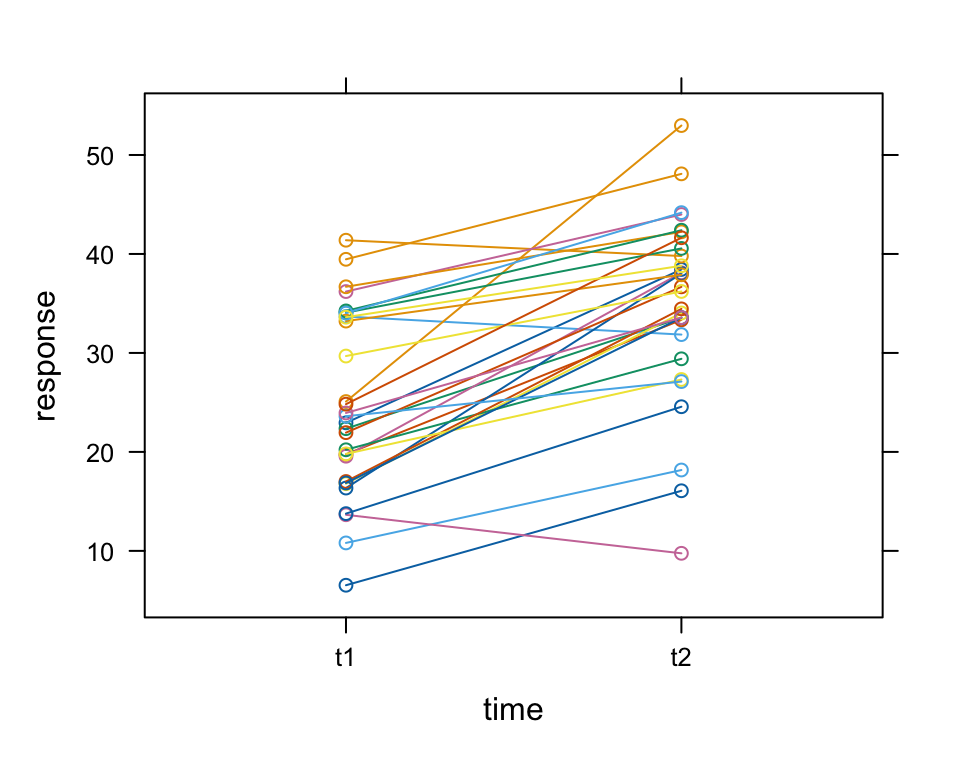
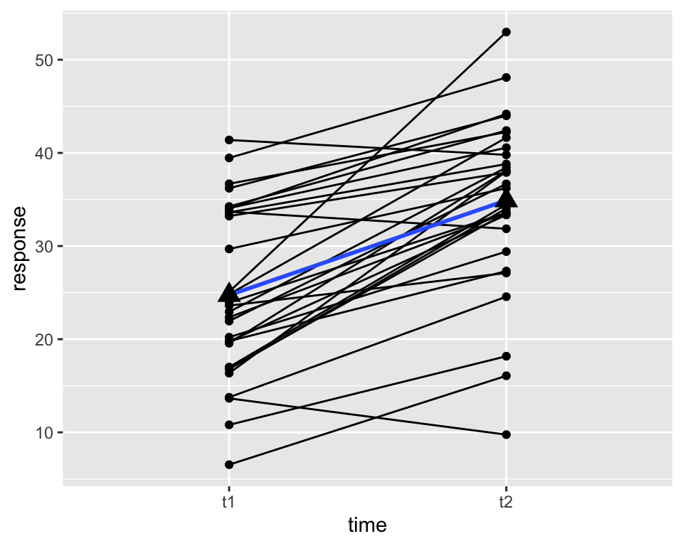
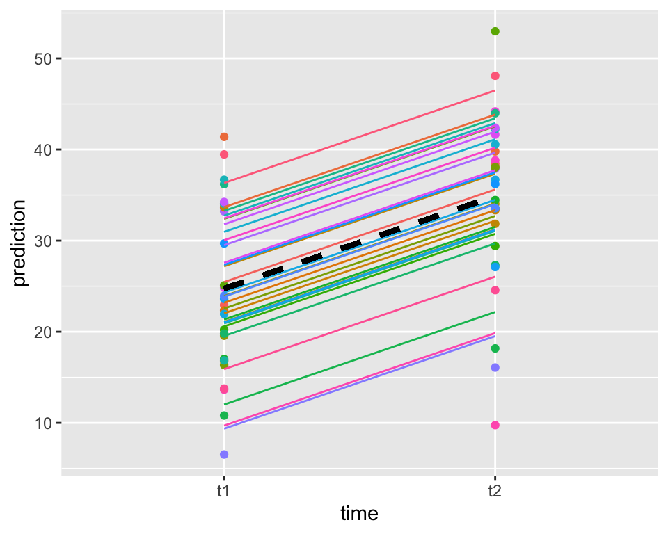
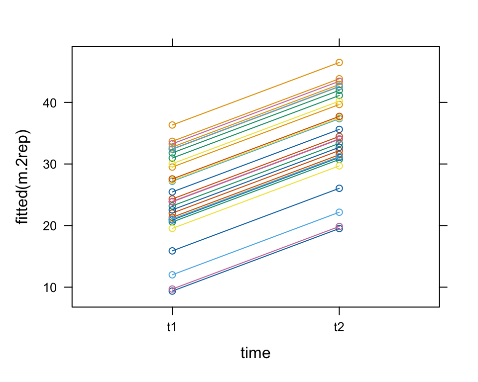
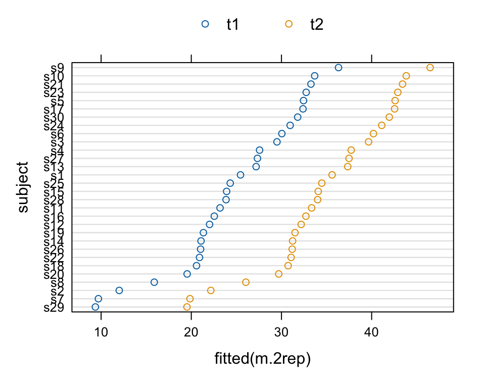
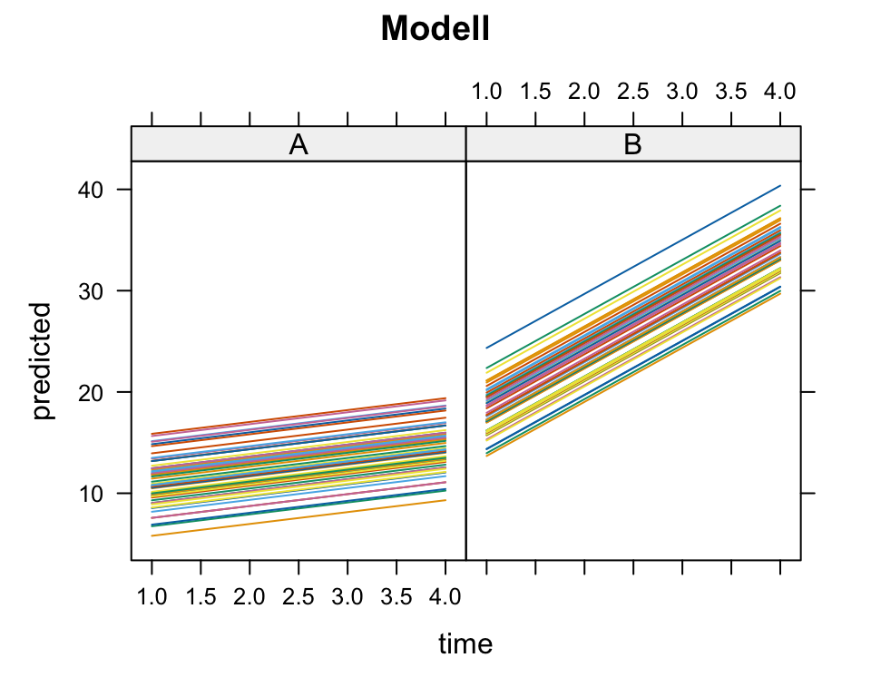
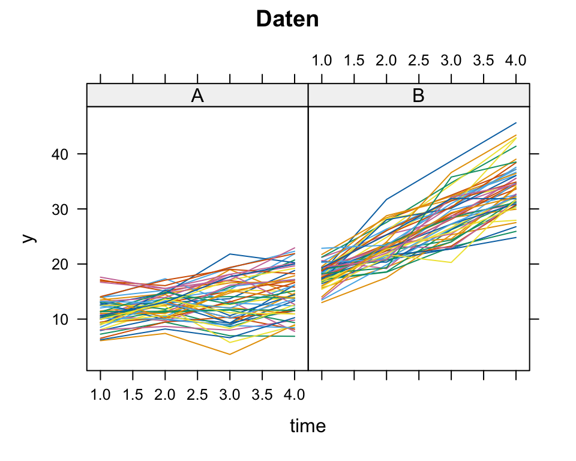
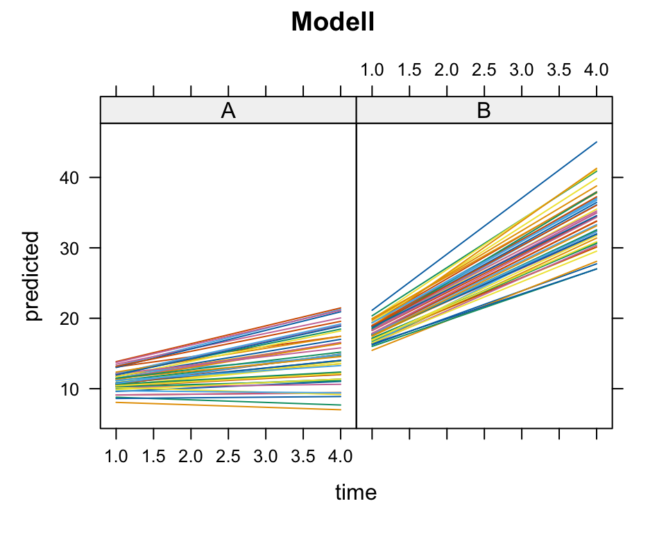
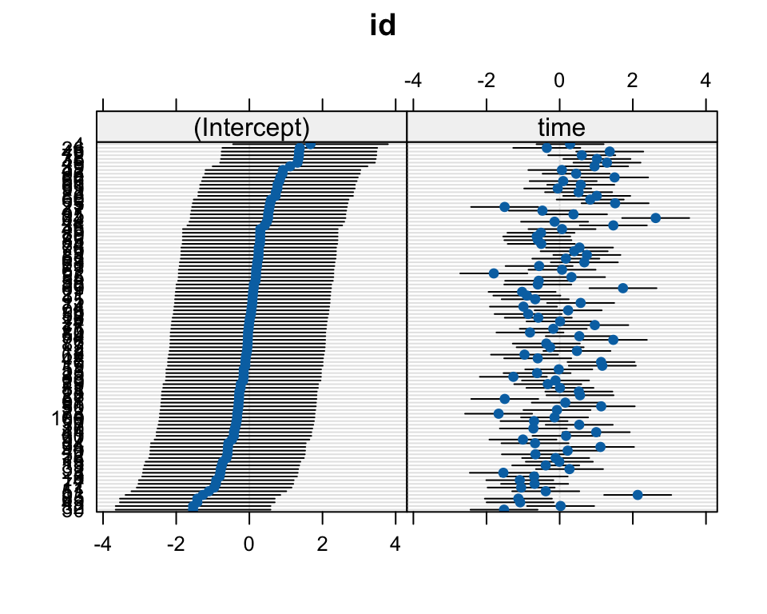

Sie können ein Random Intercept Modell anpassen mit den Packeten lme4 und lmerTest.
Sie kennen den Code zum Anpassen von einem Random Intercept Model für Response \(Y\), Eingangsgrösse(n) \(x\) und Cluster \(ID\), lmer(Y~x+(1|ID)).
Sie können ein Random Intercept Modell interpretieren (feste Effekte, zufällige Effekte, Varianzkomponenten und Intraklassenkorrelation).
Sie müssen sonst keinen zusätzlichen Code kennen (lernen) (zusätzlich benötigter Code für Übungen oder Prüfung zu diesem Thema wird gegeben).
Alternativer Code ist zum späteren Nachschauen gedacht (relativ viele MSc-Arbeiten brauchen Mixed-Models).
Abschnitte mit * sind für die Interessierten.
12.1 Recap: General Linear Model (LM)
Das Allgemeine Lineare Modell mit kontinuierlicher abhängiger Variable \(Y\) war:
\[
\boxed{Y_i=\mathbf{x}_i^ T\mathbf{\beta}+\epsilon_i}, \quad i=1,\dots, n
\]
Dabei stand \(\mathbf{x}_i^ T\mathbf{\beta}\) für den linearen Prädiktor (\(T\) steht für transponiert; wenn \(\mathbf{x}\) ein Kolonnenvektor ist, ist \(\mathbf{x}^T\) ein Zeilenvektor). Der lineare Prädiktor ist das Skalarprodukt
Dabei nahmen wir unabhängige und identisch verteilte stochastische Fehler an, \(\epsilon_i\, \iid\), meistens \(\epsilon_i \sim \mathcal{N}(0,\sigma^2)\). Mit \(m\) Eingangsgrössen und einem Intercept, also mit \(p=m+1\) Parametern und \(n\) Beobachtungen können wir das Modell auch in Matrixform schreiben:
Der Ausdruck \(\|\mathbf{Y} - X\boldsymbol{\beta}\|^2\) bezeichnet die quadratische Norm der Residuen im linearen Regressionsmodell und ist nichts anderes als die Residuenquadratsumme \[
\|\mathbf{Y} - X\boldsymbol{\beta}\|^2 = (\mathbf{Y} - X\boldsymbol{\beta})^\top (\mathbf{Y} - X\boldsymbol{\beta}) = \sum_{i=1}^n (y_i - \hat{y}_i)^2.
\]
Ableiten der Optimierungsfunktion nach \(\mathbf{\hat{\beta}}\) gibt \[\begin{equation}
(-2)X^T(\mathbf{Y}-X\mathbf{\hat{\beta}})=\mathbf{0}
\end{equation}\]
Dies führt uns zu den Normalgleichungen\[\begin{equation}
\overset{p\times p}{X^TX}\quad\overset{p\times
1}{\mathbf{\hat{\beta}}}=\overset{p\times 1}{X^T\mathbf{Y}}.
\end{equation}\]
\(X^T\) ist die transponierte Design-Matrix. Das sind dann \(p\) lineare Gleichungen für \(p\) Unbekannte (Komponenten von \(\mathbf{\hat{\beta}}\)). Wenn die Kolonnen der Design-Matrix \(X\) linear unabhängig sind, dann ist die \(p\times p\)-Matrix \(X^TX\) invertierbar und der Kleinste-Quadrate-Schätzer ist dann \[\begin{equation}
\boxed{\mathbf{\hat{\beta}}=(X^TX)^{-1}X^T\mathbf{Y}}
\end{equation}\] und kann aus den Daten berechnet werden. Aus den Residuen \(r_i=y_i-\mathbf{x}_i^T\mathbf{\hat{\beta}}\) bekommt man schliesslich eine Schätzung für \(\sigma^2\), \[\begin{equation}
\label{eq:s2hat}
\boxed{\hat{\sigma}^2=\frac{1}{n-p}\sum_{i=1}^n r^2_i}
\end{equation}\] Dabei entspricht \(n-p\), also Anzahl Beobachteten minus die Anzahl Parameter dem Freiheitsgraden.
12.1.1.1 Verteilung der Schätzer bei Normalverteilung*
Unter der Annahme \(\epsilon_i \,\iid \sim \mathcal{N}(0,\sigma^2)\) gilt dann:
Schätzer ist multivariat normalverteilt, \(\mathbf{\hat{\beta}}\sim \mathcal{N}_p(\mathbf{\beta},\Cov(\mathbf{\hat\beta}))\)
Die Wurzeln der Diagonalelemente entsprechen dann den Standardfehlern.
Man kann zeigen, dass \(\Cov(\mathbf{\hat\beta})=\sigma^2 (X^TX)^{-1}\).
Die geschätzte Residualvarianz hat die Verteilung: \(\hat{\sigma}^2\sim \frac{\sigma^2}{n-p}\chi^2_{n-p}\)
Die Normalverteilung der Fehler ist oft nicht erfüllt. Für grosse \(n\) sind die Aussagen dann trotzdem annähernd wahr (Zentraler Grenzwertsatz). Das ist dann die herkömmliche Begründung in der Praxis für die Konstruktion von Konfidenzintervallen und Tests für die Parameter des Modells.
12.2 Linear Mixed Model
Wir kommen nun zu einer Erweiterung des Linearen Modells, zum Linear Mixed Model (LMM) (Lineares Gemischtes Modell). Oft haben wir in der Gesundheitsforschung zum Beispiel Messwiederholungen innerhalb einer statistischen Einheit (mehrere Beobachtungen innerhalb einer Person) oder wir haben mehrere Beobachtungen innerhalb eines Clusters (z.B. einem Spital). Die Beobachtungen innerhalb einer Person (oder eines Clusters) sind dann ähnlicher als die Beobachtungen zwischen Personen (oder Clustern). Die Beobachtungen innerhalb einer statistischen Einheit sind dann nicht mehr unabhängig. Wir haben dann korrelierte Fehler, die wir berücksichtigen müssen (da i.i.d. Annahme dadurch verletzt). Die statistische Einheit ist die Person oder das Cluster, nicht die Beobachtung.
12.2.1 Bedingte Unabhängigkeit
Bedingte Unabhängigkeit spielt eine zentrale Rolle bei den Modellen, die wir unten einführen.
Bei Jugendlichen sind Körpergrösse und Wortschatz offensichtlich nicht unabhängig. Aber sie sind bedingt unabhängig, wenn wir für jeden Jugendlichen eine latente Variable wie Maturität kennen würden. Wenn man den Reifegrad (Maturität) kennt, liefert die Körpergrösse keine zusätzliche Information über den Wortschatz. Das gilt natürlich unter der Annahme, dass die Körpergrösse nur über die Maturität mit dem Wortschatz zusammenhängt.
Dieses Prinzip wird nun in Modellen mit latenten Variablen angewandt. Man nimmt an, dass die manifesten Variablen nichts mehr gemeinsam haben, nachdem man für eine latente Variable kontrolliert hat.
Wir können dies z.B. anwenden für gepaarte Beobachtungen \(Y_{i1}\) und \(Y_{i2}\) innerhalb einer \(i\)ten Einheit. Beobachtungen innerhalb einer statistischen Einheit \(i\) sind nun korreliert, weil sie einen gemeinsamen Term \(U_i\) enthalten. Dieser gemeinsame Term ist latent. Wenn wir ihn kennen würden (auf ihn bedingen), dann sind die Beobachtungen innerhalb einer Einheit unabhängig. Die bedingte Verteilung von \(Y_1\) gegeben \(Y_2\) und \(U_i\) ist dann gleich der bedingten Verteilung von \(Y_1\) gegeben nur \(U_i\), \[
\Pr(Y_{i1}\mid Y_{i2},U_i)=\Pr(Y_{i1} \mid U_i).
\]
Wenn man also den latenten Effekt \(U_i\) kennt, dann liefert die Information über \(Y_2\) keinen zusätzlichen Erkenntnisgewinn über die Verteilung von \(Y_1\). Der gemeinsame Einfluss ist dann herausgerechnet – und die Beobachtungen \(Y_{ij}\) sind nur noch durch unabhängige Fehler beeinflusst. Wenn wir \(U_i\) nicht kennen, dann sind \(Y_{i1}\) und \(Y_{i2}\) marginal abhängig.
Wir können die Korrelation der Beobachtungen innerhalb einer Einheit (Person, Cluster) durch das Hinzufügen von zufälligen oder latenten Variablen \(\mathbf{U}_i\) berücksichtigen. Diese zusätzliche(n) Zufallsvariable(n) induzieren eine Korrelation der wiederholten Beobachtungen und erklären dann die Korrelation der wiederholten Beobachtungen. Bedingt auf die latenten Zufallsvariable(n) \(U_i\) sind die Beobachtungen innerhalb einer Einheit unabhängig.
Der Vorteil, die \(\mathbf{U}_i\) als zufällig zu behandeln, ist, dass wir weniger Parameter brauchen. In linearen Mixed Models (LMM) sind die zusätzlichen Parameter Varianzkomponenten, die die Varianz der \(\mathbf{U}_i\) spezifizieren, nicht die \(\mathbf{U}_i\) selber. Zudem hätten Fixed-Effects-Parameter \(\mathbf{U}_i\) keine Interpretation als Populationsparameter.
12.3 Allgemeiner Fall*
Für die Interessierten betrachten wir zuerst den allgemeinen Fall. Die für uns wichtigen Spezialfälle weiter unten sind dann einfacher.
Neu ist nun der \(\color{red}{rote}\) Teil in der Modellformel.
Das Modell für die Einheit \(i\) (Person, Cluster) mit \(n_i\) Beobachtungen lautet:
Dies entspricht einem Modell mit konstanter Korrelation (Intraklassenkorrelation):
\[
\rho = \frac{\nu^2}{\nu^2 + \sigma^2}.
\]
Es gibt viele Modelle mit nicht-konstanter Korrelation (z.B. auto-regressive Fehlern), die wir hier nicht behandeln.
12.4 Random Intercept Model
Wir bleiben nun beim Random Intercept Model, welches das bei weitem häufigste LMM darstellt. Eine Zeile (eine Beobachtung \(j\) von Einheit \(i\)) schreiben wir dann \[
\boxed{Y_{ij}=\mathbf{x}^T_{ij}\mathbf{\beta}+{\color{red}{U_i}}+\epsilon_{ij}}, \quad i=1,\dots,n, \quad j=1,\dots,n_i.
\tag{12.2}\]
\(n\) steht für die Anzahl Personen oder Cluster und \(n_i\) für die Anzahl Beobachtungen für Einheit \(i\). Wir haben also total \(\sum_{i=1}^n n_i\) Beobachtungen. Im Gegensatz zum linearen Modell haben wir jetzt zwei Zufallsvariablen, \(U_i\) zusätzlich zu \(\epsilon_{ij}\). Wir nehmen für beide Normalverteilungen an, nämlich \(U_i\sim \mathcal{N}(0, \nu^2)\) und \(\epsilon_{ij}\sim \mathcal{N}(0,\sigma^2)\).
Between-und within-subject Varianz: Der Parameter \(\nu^2\) stellt nun die between-subject Varianz und der Parameter \(\sigma^2\) stellt die within-subject Varianz dar.
Verglichen mit einem linearen Modell haben wir also zusätzlich ein random intercept, \[\beta_{0i}=\beta_0+U_i.\] Wir können 12.1 dann schreiben als \[
Y_{ij}=\underbrace{\beta_0+U_i}_{\beta_{0i}}+\beta_1x_{i1}+\dots+\beta_m x_{im}+\epsilon_{ij}.
\]
Intraklassenkorrelation: \(\Cor(Y_{ij},Y_{ij'})=\frac{\nu^2}{\nu^2+\sigma^2}\). Diese Grösse stellt den Anteil der between-subject Varianz and der totalen Varianz dar.
12.5 Gepaarter \(t\)-Test als LMM
Das grundlegendste LMM ist ein Modell, das wir schon kennen, nämlich das Modell, das einem gepaarten \(t\)-Test entspricht.
Mit einen dichotomen Prädiktor \(T\), der z.B. einen pre- und einen post-Zeitpunkt definiert, ist das Modell \[
Y_{ij}=\beta_0+\beta_1T_{ij}+U_i+\epsilon_{ij}
\tag{12.3}\] mit \(i=1,\dots, n, \quad j=1,2\) und \(T_{ij}=\begin{cases} 1 &\mbox{wenn } j=2, \\
0 & \mbox{wenn } j=1 \end{cases}\)
Wir haben wieder \(U_i\sim \mathcal{N}(0, \nu^2),\quad \epsilon_{ij}\sim \mathcal{N}(0,\sigma^2)\) und \(\Cor(Y_{i1},Y_{i2})=\frac{\nu^2}{\nu^2+\sigma^2}\).
Die Quantität von Interesse ist wie beim gepaarten \(t\)-Test die erwartete Veränderung zwischen \(t_1\) und \(t_2\). Diese Quantität entspricht dem Parameter \(\beta_1\).
12.5.1 Daten
Das data.frame d.long2 beinhaltet eine kontinuierliche abhängige Variable zu zwei Zeitpunkten mit \(n=30\) und \(n_i=2\) für alle \(i\). Daten sind im Long Format, d.h. wir haben eine Zeile für jede Beobachtung, also zwei Zeilen für jede statistische Einheit.
Das Studieren der Beispiele in ?reshape lohnt sich, da entsprechende Umwandlungen doch oft benötigt werden. Wenn man gerne tidyverse verwendet, kann man mit den Funktionen pivot_longer und pivot_wider arbeiten.
Im Wide Format haben wir nun eine Zeile pro statistische Einheit, dafür mehrere (hier zwei) Kolonnen.
Die beobachtete Korrelation der wiederholten Messungen bekommen wir mit
Um ein Linear Mixed Model anzupassen, brauchen wir Daten immer im Long Format. Eine Zeile entspricht dann einer Beobachtung, nicht einer statistischen Einheit.
$t1
Min. 1st Qu. Median Mean 3rd Qu. Max.
6.528 17.648 23.270 24.734 33.667 41.388
$t2
Min. 1st Qu. Median Mean 3rd Qu. Max.
9.754 32.226 36.445 34.892 40.367 52.976
Ein Spaghetti plot ist bei gepaarten Daten besser geeignet als ein Boxplot, da aus einem Boxplot das Design nicht eindeutig ist. Die Paarung der Beobachtungen ist im Boxplot nicht ersichtlich.
Es gibt viele Alternativen zum Plotten, z.B. mit lattice oder ggplot2:
lattice::xyplot(response~time,groups=subject,data=d.long2,type="b")##library(ggplot2) p <-ggplot(data = d.long2, aes(x = time, y = response, group = subject))p <- p+geom_point()+geom_line()+stat_smooth(aes(group =1),method="lm",se=FALSE)p <- p +stat_summary(aes(group=1), geom ="point", fun = mean,shape =17, size =4)p


12.5.4 Analyse: Als gepaarter \(t\)-test
Ein gepaarter Test ist bekannterweise äquivalent zu einem one-sample Test der Veränderung:
Paired t-test
data: post and pre
t = 7.937, df = 29, p-value = 9.4e-09
alternative hypothesis: true mean difference is not equal to 0
95 percent confidence interval:
7.53997 12.77472
sample estimates:
mean difference
10.1573
print(t.test(change),digits=6) # äquivalent
One Sample t-test
data: change
t = 7.937, df = 29, p-value = 9.4e-09
alternative hypothesis: true mean is not equal to 0
95 percent confidence interval:
7.53997 12.77472
sample estimates:
mean of x
10.1573
12.5.5 Analyse: Als Repeated Measures ANOVA*
aov() dient wie lm() zum Anpassen linearer Modelle. Der Unterschied ist die Art und Weise, wie print() und summary() den Fit behandeln. Mit aov() ist der Ausdruck in der traditionellen Sprache der Varianzanalyse anstelle der linearen Modelle. Wenn die Modellformel einen einzelnen Fehlerterm enthält, wird dieser verwendet, um Fehlerstrata zu spezifizieren, und es werden geeignete Modelle innerhalb jeder Fehlerschicht angepasst.
Error: subject
Df Sum Sq Mean Sq F value Pr(>F)
Residuals 29 4197 144.7
Error: Within
Df Sum Sq Mean Sq F value Pr(>F)
time 1 1547.6 1547.6 63 9.4e-09 ***
Residuals 29 712.4 24.6
---
Signif. codes: 0 '***' 0.001 '**' 0.01 '*' 0.05 '.' 0.1 ' ' 1
Wir können die entsprechenden Quadratsummen von aov() reproduzieren. Dazu passen wir folgende Modelle an:
Repeated Measures ANOVA ist meistens nicht empfehlenswert für die Analyse von wiederholten Messungen. Eine flexiblere und moderne Alternative ist ein LMM. Ein solches Modell wollen wir jetzt an die Daten anpassen.
12.5.6 Analyse: Als Linear Mixed Model (LMM)
Lineare Gemischte Modelle (LMM) sind die moderne Alternative zur Analyse von Messwiederholungen oder Beobachtungen mit korrelierten Fehlern. Der Vorteil gegenüber Repeated-Measures ANOVA ist, dass LMM nicht-balancierte Daten oder Daten mit fehlenden Werten besser verarbeiten. Klassische Repeated Measures ANOVA aov(...+Error(subject)) brauchen balancierte Daten ohne Missings.
Wir verwenden im Folgenden die Funktion lmer() aus dem Paket lme4 Zusätzlich nutzen wir auch das Paket lmerTest (mehr dazu später). LMM werden mit der Maximum-Likelihood-Schätzung (siehe Section 9.7.3) angepasst (im Gegensatz zu lm() und aov(), die mit der Methode der kleinsten Quadrate angepasst werden).
12.5.6.1 LMM anpassen
Wir laden zuerst lme4, gefolgt von lmerTest
library(lme4) library(lmerTest) #immer laden nach lme4
Wir brauchen die lmer() Funktion. Das neue Element in der Modellformel ist der Term (1|subject). Dieser stellt ein Random Intercept dar (Abstand für Einheit \(i\) zum fixed Intercept). Der Grund ist inzwischen bekannt: Die Beobachtungen innerhalb eines Subjekts sind gruppiert (wiederholte Messungen innerhalb eines Subjekts). Das Random Intercept induziert dann eine Korrelation der wiederholten Messungen.
12.5.6.2 Model Fit
summary() ist eine generische Funktion, der auch lmer Objekte übergeben werden können:
summary(m.2rep,cor=FALSE)
Linear mixed model fit by REML. t-tests use Satterthwaite's method [
lmerModLmerTest]
Formula: response ~ time + (1 | subject)
Data: d.long2
REML criterion at convergence: 408.5
Scaled residuals:
Min 1Q Median 3Q Max
-2.0380 -0.4875 -0.0289 0.5657 2.1045
Random effects:
Groups Name Variance Std.Dev.
subject (Intercept) 60.07 7.751
Residual 24.57 4.956
Number of obs: 60, groups: subject, 30
Fixed effects:
Estimate Std. Error df t value Pr(>|t|)
(Intercept) 24.73 1.68 38.57 14.726 < 2e-16 ***
timet2 10.16 1.28 29.00 7.937 9.4e-09 ***
---
Signif. codes: 0 '***' 0.001 '**' 0.01 '*' 0.05 '.' 0.1 ' ' 1
Im Output sind neu die Between-subject und Within-subject Varianz der Random effects ersichtlich. Das sind die Parameter, die die Verteilung der Random effects spezifizieren. Die Random effects selber, die \(U_i\), sehen wir hier nicht. Ersichtlich ist auch die Anzahl Beobachtungen und die Anzahl statistischer Einheiten. Die Fixed effects sind analog zum Linearen Modell zu interpretieren. Die geschätzte erwartete Veränderung ist 10.1573458.
12.5.6.3 Shrinkage*
Die geschätzten Random effects \(\hat{U}_i\) selber können wir extrahieren mit ranef(). Sie sind posterior-Schätzungen bedingt auf die Daten, \(\hat{U}_i=E(U_i\mid Y_i)\). Ihre Varianz ist kleiner als die wahre Varianzkomponente aufgrund von sogenannter Shrinkage (auf die wir hier nicht eingehen), \(\Var(\hat{U}_i)<\nu^2\).
12.5.6.4 Verteilung der \(t\)-Statistik für fixed effects*
In gemischten linearen Modellen (LMMs) ist die Verteilung der Teststatistiken für feste Effekte komplizierter als in klassischen linearen Modellen, da die Schätzung der Varianzkomponenten (zufällige Effekte) zusätzliche Unsicherheit einführt.
Angenommen, wir testen einen festen Effekt \(\beta_j\). Die Teststatistik lautet: \[
t = \frac{\hat{\beta}_j}{\text{SE}(\hat{\beta}_j)}
\]
Da die Standardabweichung von geschätzten Varianzkomponenten abhängt, ist die Verteilung von \(t\) nicht exakt eine \(t\)-Verteilung mit bekannten Freiheitsgraden. Die Satterthwaite-Methode approximiert die Freiheitsgrade \(\nu\) sodass:
\[
t \sim t_\nu
\]
Die Approximation basiert auf der Idee, die Varianz der Schätzung selbst als Zufallsvariable zu behandeln und deren Unsicherheit zu berücksichtigen.
Die lmerTest-Erweiterung zu lme4 berechnet \(p\)-Werte und Freiheitsgrade für feste Effekte. Die Freiheitsgrade sind nicht ganzzahlig und hängen vom jeweiligen Effekt und der Struktur der zufälligen Effekte ab. Die Methode ist besonders nützlich bei unausgeglichenen Designs oder komplexen Random-Strukturen, wo klassische df-Schätzungen versagen. Das Laden von lmerTest nach dem Laden von lme4 wird empfohlen (und das haben wir auch gemacht), wenn \(p\)-Werte benötigt werden, da es Freiheitsgrade approximiert und die \(t\)-Statistiken somit für Hypothesentests interpretierbarer macht.
12.5.6.5 Tests
Den Zeiteffekt explizit als Modellvergleich machen wir mit einem Modellvergleich:
Alternativen wären drop1() für Wald-Tests und einfach anova(), weil wir nur eine Eingangsgrösse haben:
drop1(m.2rep) ##Wald-type
Single term deletions using Satterthwaite's method:
Model:
response ~ time + (1 | subject)
Sum Sq Mean Sq NumDF DenDF F value Pr(>F)
time 1547.6 1547.6 1 29 62.996 9.4e-09 ***
---
Signif. codes: 0 '***' 0.001 '**' 0.01 '*' 0.05 '.' 0.1 ' ' 1
anova(m.2rep)
Type III Analysis of Variance Table with Satterthwaite's method
Sum Sq Mean Sq NumDF DenDF F value Pr(>F)
time 1547.6 1547.6 1 29 62.996 9.4e-09 ***
---
Signif. codes: 0 '***' 0.001 '**' 0.01 '*' 0.05 '.' 0.1 ' ' 1
12.5.6.6 Intraklassenkorrelation
Die Intraklassenkorrelation hatten wir oben schon berechnet.
print(VarCorr(m.2rep),comp="Variance")
Groups Name Variance
subject (Intercept) 60.073
Residual 24.566
Hier bringt dieser Schritt keine zusätzliche Information. Mit dem emmeans() kann man sich dann aber vor allem bei komplexeren Modellen Kontraste von Interesse berechnen lassen, wie wir das früher schon gemacht haben.
12.5.6.8 Vorhersagen
LMM sind zweistufige Modelle, man hat bedingte (auf Subject bedingt) und marginale Vorhersagen. Wir können ein Data frame erstellen mit den bedingten und marginalen Vorhersagen und diese plotten:
ggplot(predictions, aes(x = time, y = CondPred, color = subject)) +geom_point(aes(y=actual,color=subject))+geom_line(aes(y=CondPred,group=subject),lty=1)+geom_line(aes(y=MargPred,group=subject),lty=2,lwd=1.3,col="black")+theme(legend.position="none")+ylab("prediction")

Eine Alternative für bedingte Vorhersagen wäre
lattice::xyplot(fitted(m.2rep)~time,groups=subject,data=d.long2,type="b")##oderd.longG <- nlme::groupedData(fitted(m.2rep) ~ time | subject, data = d.long2)plot(d.longG)


12.5.6.9 Nicht-Berücksichtigung der Korrelation
Was passiert bei Nicht-Berücksichtigung der korrelierten Fehler? Die Punktschätzungen werden nicht beeinflusst, aber die Standardfehler, und damit die Resultate von Intervallschätzungen und Tests:
Die Unsicherheit des Effekts von between-subject oder between-cluster Variablen wird unterschätzt. (Grund: Künstliche Erhöhung der Stichprobengrösse).
Die Unsicherheit des Effekts von within-subject oder within-cluster Variablen wird überschätzt. (Grund: Die Variabilität wird überschätzt, z. B. hat ein gepaarter \(t\)-Test mehr Power als ein unabhängiger \(t\)-Test).
Vergleichen wir also mit den Resultate, wenn wir statt ein LMM ein LM (lm()) anpassen würden:
Estimate Std. Error t value Pr(>|t|)
(Intercept) 24.73446 1.679675 14.725746 2.976139e-21
timet2 10.15735 2.375419 4.276023 7.190056e-05
Wir sehen, dass der within-subject Effekt dann einen grösseren Standardfehler hat und damit einen kleineren \(t\)-Wert als im LMM:
summary(m.2rep)$coef ## correct
Estimate Std. Error df t value Pr(>|t|)
(Intercept) 24.73446 1.679675 38.57025 14.725746 2.025810e-17
timet2 10.15735 1.279746 29.00000 7.936999 9.399616e-09
12.6 Within-subject Design
Wir verallgemeinern nun den gepaarten \(t\)-Test auf ein within-subject Design.
12.6.1 Daten und Design
Das Data frame d.long besteht aus 80 Beobachtungen mit \(n_i=4\) wiederholten Messungen (time) von \(n=20\) subjects (subject) auf einer kontinuierlichen abhängigen Variablen (response).
Hier haben wir \(n_i=4\) konstant für alle \(i\). Die Anzahl Beobachtungen pro Einheit muss aber nicht konstant sein. Wir könnten ein LMM auch dann anpassen, wenn wir für jede Einheit \(i\) eine unterschiedliche Anzahl Beobachtungen hätten (z.B. \(n_1=2,n_2=5,\dots,n_n=3\)).
with(d.long,interaction.plot(time,subject,response,ylab="response"))## alternative with ggplot2p <-ggplot(data = d.long, aes(x = time, y = response, group = subject))p <- p+geom_point()+geom_line(lty=2)+stat_summary(fun=mean,geom="line",aes(group =1),color="red",lwd=2)p <- p +stat_summary(aes(group=1), geom ="point", fun = mean,shape =17, size =4)p
$t1
Min. 1st Qu. Median Mean 3rd Qu. Max.
-9.232 10.966 26.576 26.582 35.109 63.772
$t2
Min. 1st Qu. Median Mean 3rd Qu. Max.
-0.5464 24.2050 36.4388 39.0144 52.7406 72.5708
$t3
Min. 1st Qu. Median Mean 3rd Qu. Max.
11.93 27.87 47.44 44.69 55.25 96.31
$t4
Min. 1st Qu. Median Mean 3rd Qu. Max.
6.818 22.668 32.504 36.900 48.607 81.482
response.t1 response.t2 response.t3 response.t4
Min. :-9.232 Min. :-0.5464 Min. :11.93 Min. : 6.818
1st Qu.:10.966 1st Qu.:24.2050 1st Qu.:27.87 1st Qu.:22.668
Median :26.576 Median :36.4388 Median :47.44 Median :32.504
Mean :26.582 Mean :39.0144 Mean :44.69 Mean :36.900
3rd Qu.:35.109 3rd Qu.:52.7406 3rd Qu.:55.25 3rd Qu.:48.607
Max. :63.772 Max. :72.5708 Max. :96.31 Max. :81.482
12.6.3 Anpassen des LMM
Die Syntax ist äquivalent zum gepaarten \(t\)-Test. Wir nennen das neue Modellobjekt m.4rep:
Linear mixed model fit by REML. t-tests use Satterthwaite's method [
lmerModLmerTest]
Formula: response ~ time + (1 | subject)
Data: d.long
REML criterion at convergence: 684
Scaled residuals:
Min 1Q Median 3Q Max
-1.8422 -0.5911 -0.1200 0.6007 2.2892
Random effects:
Groups Name Variance Std.Dev.
subject (Intercept) 97.31 9.865
Residual 333.95 18.274
Number of obs: 80, groups: subject, 20
Fixed effects:
Estimate Std. Error df t value Pr(>|t|)
(Intercept) 26.582 4.644 65.930 5.724 2.77e-07 ***
timet2 12.433 5.779 57.000 2.151 0.03569 *
timet3 18.105 5.779 57.000 3.133 0.00273 **
timet4 10.318 5.779 57.000 1.786 0.07950 .
---
Signif. codes: 0 '***' 0.001 '**' 0.01 '*' 0.05 '.' 0.1 ' ' 1
Neu sind nun zusätzliche feste Effekte, da time nun vierwertig ist. Der Globaltest für den Effekt von time mit drop1() zeigt, dass man time nicht aus dem Modell nehmen darf.
drop1(m.4rep) ##Wald-type
Single term deletions using Satterthwaite's method:
Model:
response ~ time + (1 | subject)
Sum Sq Mean Sq NumDF DenDF F value Pr(>F)
time 3430.7 1143.6 3 57 3.4244 0.02305 *
---
Signif. codes: 0 '***' 0.001 '**' 0.01 '*' 0.05 '.' 0.1 ' ' 1
Die Between-und within-subject Varianz ist im Output ersichtlich, kann aber auch extrahiert werden mit
print(VarCorr(m.4rep),comp="Variance")
Groups Name Variance
subject (Intercept) 97.31
Residual 333.95
Die geschätzte within-subject (within-unit) Korrelation – also die Intraklassenkorrelation – ist:
Es gibt hier keine klare Evidenz gegen die Modellannahmen.
Im summary()-Output sehen wir die geschätzten Zeiteffekte relativ zur Referenzkategorie. Wenn wir alle paarweisen Kontraste wollen (mit Konfidenzintervallen), können wir wieder emmeans brauchen.
$emmeans
time emmean SE df lower.CL upper.CL t.ratio p.value
t1 26.6 4.64 65.9 17.3 35.9 5.724 <0.0001
t2 39.0 4.64 65.9 29.7 48.3 8.402 <0.0001
t3 44.7 4.64 65.9 35.4 54.0 9.623 <0.0001
t4 36.9 4.64 65.9 27.6 46.2 7.946 <0.0001
Degrees-of-freedom method: kenward-roger
Confidence level used: 0.95
$contrasts
contrast estimate SE df lower.CL upper.CL t.ratio p.value
t2 - t1 12.43 5.78 57 -2.86 27.73 2.151 0.1495
t3 - t1 18.11 5.78 57 2.81 33.40 3.133 0.0141
t3 - t2 5.67 5.78 57 -9.62 20.97 0.982 0.7604
t4 - t1 10.32 5.78 57 -4.98 25.61 1.786 0.2908
t4 - t2 -2.11 5.78 57 -17.41 13.18 -0.366 0.9831
t4 - t3 -7.79 5.78 57 -23.08 7.51 -1.348 0.5370
Degrees-of-freedom method: kenward-roger
Confidence level used: 0.95
Conf-level adjustment: tukey method for comparing a family of 4 estimates
P value adjustment: tukey method for comparing a family of 4 estimates
12.7 Within-Between-subject Design
Wir kommen jetzt zu einem Design, das in den Gesundheitswissenschaften häufig ist. Wir haben jetzt einen between-subject Faktor group\(G\) und eine within-subject Variable time\(T\).
Es werden also z.B. zwei Gruppen \(A\) und \(B\) (Levels des between-subject Faktors group) über die Zeit (within) beobachtet. Im Folgenden behandeln wir aber time nicht als Faktor, sondern als eine kontinuierliche Eingangsgrösse. time\(T\) könnte aber auch als Faktor behandelt werden (Zeitpunkt statt Zeit).
12.7.1 Modellstruktur
Wir haben jetzt einen linearen Prädiktor mit vier Parametern \(\beta_0,\dots,\beta_3\), da jede Gruppe eine Lage und eine Steigung bezüglich Zeit hat. Das Random Intercept Modell schreiben wir \[
Y_{ij}=\underbrace{\beta_0+\beta_1 G_{ij} + \beta_2 T_{ij}+\beta_3 GT_{ij}}_{fixed}+\underbrace{\overbrace{U_i}^{rand.intercept}+\overbrace{\epsilon_{ij}}^{resid.error}}_{random}
\tag{12.4}\]
Marginale Erwartung: Schauen wir uns die Erwartungswerte an. Für die marginale Erwartung haben wir – da alle random effects im Schnitt Null sind – einfach den linearen Prädiktor \(\beta_0+\beta_1 G_{ij} + \beta_2 T_{ij}+\beta_3 GT_{ij}\). Für Gruppe \(A\) und \(B\) gibt das:
Wir sehen hier schön, dass jede Gruppe eine eigene Lage und eine eigene Steigung hat. Der Parameter von Interesse ist häufig der Interaktionsparameter\(\beta_3\). Dieser ist als Unterschied der Steigungen zwischen den beiden Gruppen zu interpretieren. Interaktion bedeutet: Der Effekt von group ist dann \(\beta_1+\beta_3 T\), also eine Funktion der Zeit! Oder: Der Effekt von time ist dann \(\beta_2+\beta_3 G\), also eine Funktion der Gruppe!
Die \(U_i\)’s interessieren häufig nicht, sie müssen aber im Modell sein, um der Korrelationsstruktur der Daten Rechnung zu tragen.
Eine Erweiterung des Modells ist das Random Slope Modell, dieses erlaubt zusätzlich zum Random Intercept Modell noch unterschiedliche Slopes (also unterschiedliche Zeiteffekte) für jedes Subject. Das Random Slope Modell schreiben wir \[
Y_{ij}=\underbrace{\beta_0+\beta_1 G_{ij} + \beta_2 T_{ij}+\beta_3 GT_{ij}}_{fixed}+\underbrace{\overbrace{U_{i0}}^{rand.intercept}+T_{ij}\overbrace{U_{i1}}^{rand.slope}+\overbrace{\epsilon_{ij}}^{resid.error}}_{random}
\tag{12.5}\]
Die Interpretation der Fixed Effects ist analog. Das Modell erlaubt aber noch unterschiedliche Slopes bezüglich time. Jedes Subject hat dann eine eigene Lage und eine eigene Steigung.
12.7.2 Simulation von Daten aus Modell*
Für die Interessierten: Mit dem folgenden Code simulieren wir Daten aus dem besprochenen Design: Wir simulieren den Verlauf von \(n=100\) statistischen Einheiten aus zwei Gruppen \(A\) und \(B\). Jede Einheit hat vier Beobachtungen über die Zeit. Die abhängige Variable ist \(Y\). Natürlich kennen wir bei realen Daten die wahren Parameter nicht, aber es lohnt sich, Daten aus einem Modell zu simulieren und dann die Analyse zu machen. Dies ist sehr hilfreich für das Verständnis des Designs, des Modells und schliesslich der Anlayse.
simulate <-function(seed=62) { n <-100# number of subjects K <-4# number of measurements per subject# data frame with the design: everyone has a baseline measurement, and then measurements at random follow-up times d.SP <-data.frame(id =rep(seq_len(n), each = K), time =rep(1:K, n), group =rep(gl(2, n/2, labels =c("A", "B")), each = K))# design matrices for the fixed and random effects X <-model.matrix(~group * time, data = d.SP) Z_base <-cbind(1, d.SP$time[1:K]) # intercept and time columns for one subject Z <-kronecker(diag(n), Z_base) # Block-diagonal matrix for all subjects beta <-c(10, 3, 1, 4) # fixed effects coefficients## var_intercept <-1# variance of random intercepts var_slope <-1# variance of random slopes correlation <-0# correlation between intercept and slope D <-matrix(c(var_intercept, correlation *sqrt(var_intercept * var_slope), correlation *sqrt(var_intercept * var_slope), var_slope), nrow=2) sigma <-2# sd error terms# Simulate random effects for intercept and slopeset.seed(seed) B <- MASS::mvrnorm(n, rep(0, ncol(Z_base)), D) b <-as.vector(t(B))# linear predictor eta <- X %*% beta + Z%*%b# we simulate continuous longitudinal data d.SP$y <-rnorm(n * K, mean = eta, sd = sigma)list(data=d.SP,parms=list(random=data.frame(varInt=1,varSlope=1,Corr=0),fixed=data.frame(beta0=10,beta1=3,beta2=1,beta3=4),sigma2=sigma^2))}simSP<-simulate()d.SP<-simSP$data
12.7.3 Design und Daten
Wir haben ein group(2) \(\times\)time(4) between-within Design (auch Split-Plot Design), mit \(n=100\) (50 pro Gruppe mit je vier Beobachtungen). Wir behandeln Zeit als eine kontinuierliche Eingangsgrösse!
str(d.SP)
'data.frame': 400 obs. of 4 variables:
$ id : int 1 1 1 1 2 2 2 2 3 3 ...
$ time : int 1 2 3 4 1 2 3 4 1 2 ...
$ group: Factor w/ 2 levels "A","B": 1 1 1 1 1 1 1 1 1 1 ...
$ y : num 12.5 12.9 13.7 18.8 10.2 ...
with(d.SP,xtabs(~group+time))
time
group 1 2 3 4
A 50 50 50 50
B 50 50 50 50
Da wir die Daten aus einem Modell simuliert haben, kennen wir hier die wahren Werte der Parameter. Unter $fixed sehen wir die wahren Parameter der fixed effects. Unter $random sehen wir die wahre Varianz der Random Intercepts, der Random Slopes und die Korrelation dieser (die wir auf Null gesetzt haben). Unter $sigma2 sehen wir die Residualvarianz.
Die (aus dem bekannten Modell simulierten) Daten im Long Format (400 Zeilen) sind dann
psych::headTail(d.SP,4,4)
id time group y
1 1 1 A 12.48
2 1 2 A 12.93
3 1 3 A 13.71
4 1 4 A 18.82
... ... ... <NA> ...
397 100 1 B 16.04
398 100 2 B 22.9
399 100 3 B 29.33
400 100 4 B 32.19
und im Wide Format (100 Zeilen), oft nützlich für deskriptive Statistik:
$A
id group y.1 y.2 y.3
Min. : 1.00 A:50 Min. : 6.087 Min. : 7.40 Min. : 3.591
1st Qu.:13.25 B: 0 1st Qu.: 9.327 1st Qu.:10.41 1st Qu.:10.186
Median :25.50 Median :10.601 Median :12.74 Median :13.058
Mean :25.50 Mean :11.104 Mean :12.44 Mean :13.204
3rd Qu.:37.75 3rd Qu.:12.848 3rd Qu.:14.32 3rd Qu.:16.478
Max. :50.00 Max. :17.609 Max. :17.33 Max. :21.813
y.4
Min. : 6.878
1st Qu.:11.556
Median :14.381
Mean :14.757
3rd Qu.:17.703
Max. :22.929
$B
id group y.1 y.2 y.3
Min. : 51.00 A: 0 Min. :13.00 Min. :17.53 Min. :20.28
1st Qu.: 63.25 B:50 1st Qu.:17.03 1st Qu.:21.14 1st Qu.:25.88
Median : 75.50 Median :18.30 Median :22.84 Median :28.57
Mean : 75.50 Mean :18.07 Mean :23.24 Mean :28.65
3rd Qu.: 87.75 3rd Qu.:19.32 3rd Qu.:25.29 3rd Qu.:31.48
Max. :100.00 Max. :22.86 Max. :31.72 Max. :38.70
y.4
Min. :24.81
1st Qu.:31.30
Median :33.86
Mean :34.07
3rd Qu.:36.35
Max. :45.64
12.7.5 Modelle anpassen
Wir haben als fixed effects: group, time und group:time-Interaktion. Wir haben zwei verschiedene Random-Effects Strukturen (1|subject) (für das random intercept Modell) und (time|subject) (für das random slope Modell):
Random intercept model
m1 <-lmer(y ~ group * time + (1| id), data = d.SP)
Random slope. Schätzt zusätzlich die Varianz der Slopes und die Kovarianz Intercept-Slopes. Syntax: time|id
m2 <-lmer(y ~ group * time + (time | id), data = d.SP)
12.7.6 Angepasste Modelle
12.7.6.1 Random Intercept
Versuchen Sie, die Parameterschätzungen der festen Effekte unten in der rechten Graphik nachzuvollziehen. So ist z.B. \(\hat{\beta}_3=4.1677004\) der geschätzte erwartete Unterschied in der Steigung zwischen Gruppe \(A\) und \(B\), \(\hat{\beta}_2=1.1723243\) ist die geschätzte erwartete Steigung für Gruppe \(A\), usw.
summary(m1, cor =FALSE)
Linear mixed model fit by REML. t-tests use Satterthwaite's method [
lmerModLmerTest]
Formula: y ~ group * time + (1 | id)
Data: d.SP
REML criterion at convergence: 1985.8
Scaled residuals:
Min 1Q Median 3Q Max
-2.97793 -0.54881 0.00251 0.58228 2.78736
Random effects:
Groups Name Variance Std.Dev.
id (Intercept) 6.778 2.603
Residual 5.342 2.311
Number of obs: 400, groups: id, 100
Fixed effects:
Estimate Std. Error df t value Pr(>|t|)
(Intercept) 9.9451 0.5439 266.3516 18.285 < 2e-16 ***
groupB 2.7147 0.7692 266.3517 3.529 0.000491 ***
time 1.1723 0.1462 298.0000 8.020 2.44e-14 ***
groupB:time 4.1677 0.2067 298.0000 20.161 < 2e-16 ***
---
Signif. codes: 0 '***' 0.001 '**' 0.01 '*' 0.05 '.' 0.1 ' ' 1
predicted <-predict(m1)lattice::xyplot(data = d.SP, y ~ time | group,groups = id, type ="l",main="Daten")lattice::xyplot(data = d.SP, predicted ~ time | group, groups = id, type ="l",main="Modell")

12.7.6.2 Random Slope
Für das random slope Modell sehen wir zusätzlich eine Variabilität in den Steigungen für jede statistische Einheit. Die Punktschätzungen für die fixed effects bleiben aber gleich.
summary(m2, cor =FALSE)
Linear mixed model fit by REML. t-tests use Satterthwaite's method [
lmerModLmerTest]
Formula: y ~ group * time + (time | id)
Data: d.SP
REML criterion at convergence: 1908.9
Scaled residuals:
Min 1Q Median 3Q Max
-2.9705 -0.5587 0.0275 0.5456 2.2772
Random effects:
Groups Name Variance Std.Dev. Corr
id (Intercept) 1.600 1.265
time 1.015 1.007 -0.12
Residual 3.673 1.917
Number of obs: 400, groups: id, 100
Fixed effects:
Estimate Std. Error df t value Pr(>|t|)
(Intercept) 9.9451 0.3771 97.9991 26.374 < 2e-16 ***
groupB 2.7147 0.5333 97.9991 5.091 1.73e-06 ***
time 1.1723 0.1871 98.0009 6.267 9.87e-09 ***
groupB:time 4.1677 0.2645 98.0009 15.755 < 2e-16 ***
---
Signif. codes: 0 '***' 0.001 '**' 0.01 '*' 0.05 '.' 0.1 ' ' 1
predicted <-predict(m2)lattice::xyplot(data = d.SP, y ~ time | group,groups = id, type ="l",main="Daten")lattice::xyplot(data = d.SP, predicted ~ time | group, groups = id, type ="l",main="Modell")


Beim Random Slope Modell ist die Varianz des zufälligen Beitrags eine quadratische Funktion der Zeit, also nicht mehr konstant wie beim Random Intercept Modell. Die zufällige Komponente für Zeit \(T\) ist \(U_{i0} + U_{i1} \cdot T\) und die Varianz
ANOVA-like table for random-effects: Single term deletions
Model:
y ~ group * time + (time | id)
npar logLik AIC LRT Df Pr(>Chisq)
<none> 8 -954.44 1924.9
time in (time | id) 6 -992.89 1997.8 76.908 2 < 2.2e-16 ***
---
Signif. codes: 0 '***' 0.001 '**' 0.01 '*' 0.05 '.' 0.1 ' ' 1
Das Random Intercept Modell wird also zugunsten des Random Slope Modells verworfen.
12.7.6.4 Caterpillar Plot von Random Effects
Im Output hatten wir bis jetzt Varianzparameter, nicht die Random Effects selber. Die geschätzten zufälligen Effekte (Best linear unbiased predictions (BLUPs)) für jedes Subjekt im Modell, dargestellt als Punktdiagramm bekommen wir mit
dotplot.ranef.mer(ranef(m2))
$id

12.7.7 Testen von Fixed Effects
Das Hauptinteresse liegt meistens im Testen der fixed effects. Zuerst der Interaktionseffekt:
drop1(m2)
Single term deletions using Satterthwaite's method:
Model:
y ~ group * time + (time | id)
Sum Sq Mean Sq NumDF DenDF F value Pr(>F)
group:time 911.66 911.66 1 98.001 248.21 < 2.2e-16 ***
---
Signif. codes: 0 '***' 0.001 '**' 0.01 '*' 0.05 '.' 0.1 ' ' 1
drop1() testet richtigerweise nur die Interaktion. Haupteffekte sollten in der Gegenwart von Interaktion nicht getestet werden.
Type III Tests: Macht man es trotzdem, muss man sogenannte Type III Tests und den Zusammenhang mit der Default-Effektkodierung sehr gut verstehen. Wir gehen hier nicht näher darauf ein. Die Funktion anova.lmerModLmerTest() aus lmerTest macht diese Tests korrekt bei Aufruf von anova() und Übergabe eines lmer-Objekts und ist unabhängig von der Parametrisierung (im Gegensatz zu car::Anova(...,type=3)).
12.7.8 Trends und Kontraste von Trends
Die Effektparameterisierung gab uns für die fixed effects:
Wir wollen jetzt eine Schätzung für die Zeiteffekte in beiden Gruppen \(A\) und \(B\) und eine Schätzung des Unterschieds des Zeiteffekts zwischen Gruppe \(A\) und \(B.\) Dies bekommen wir die mit emmeans::emtrends()
$emtrends
group time.trend SE df lower.CL upper.CL t.ratio p.value
A 1.17 0.187 98 0.801 1.54 6.267 <0.0001
B 5.34 0.187 98 4.969 5.71 28.547 <0.0001
Degrees-of-freedom method: kenward-roger
Confidence level used: 0.95
$contrasts
contrast estimate SE df lower.CL upper.CL t.ratio p.value
B - A 4.17 0.265 98 3.64 4.69 15.755 <0.0001
Degrees-of-freedom method: kenward-roger
Confidence level used: 0.95
Die Gruppe \(B\) verändert sich pro Zeiteinheit um 4.17 Einheiten auf \(Y\) mehr als die Gruppe \(A\). Eine Schätzung der Steigung in der Gruppe \(A\) und vom Unterschied in den Steigungen zwischen den Gruppen hatten wir schon in der Effektparameterisierung. Die Steigung in der Gruppe \(B\) ist 5.34, das entspricht in der Grundparametrisierung 1.172+4.168.
12.7.9 Modellannahmen
Das Testen von Modellannahmen ist oft nicht trivial. Es lohnt sich diesbezüglich bei Bedarf Hilfe zu holen.
Hier gibt es keine Evidenz gegen die Modellannahmen. Das wäre auch erstaunlich, haben wir doch die Daten aus demselben Modell simuliert, welches wir dann an die Daten angepasst haben.